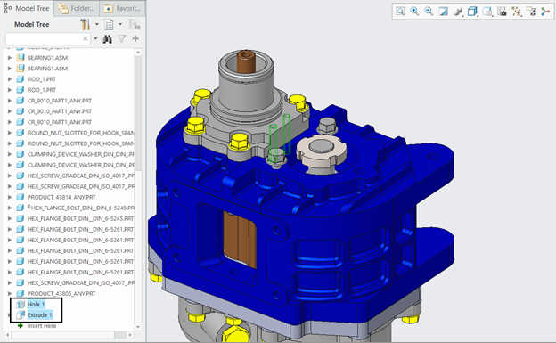

アセンブリラインの生産プロセスでは、アセンブリ状態のまま一部の加工が行われる場合があります。DFMPro はアセンブリ加工をサポートしています。アセンブリ上に追加されたフィーチャーは DFMPro によって検証されます。以下の図では、アセンブリ上に単純な穴が追加されています。

サポートされているフィーチャー：
単純穴（Simple Hole）
サポートされているルール：
深穴（Deep Holes）
穴の入口／出口面（Entry/Exit Surface for Holes）
平底穴（Flat Bottom Holes）
最小穴径（Minimum Hole Diameter）
部分穴（Partial Holes）
標準穴径（Standard Hole Sizes）
注記：
パターン、ミラー、ブーリアン演算、および複数の穴を含むスケッチはサポートされていません。